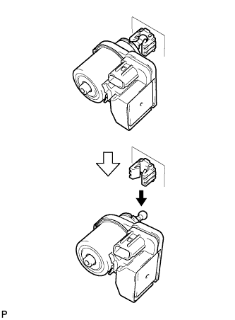

ФАРА В СБОРЕ (для моделей с газоразрядными фарами) > РАЗБОРКА |
| 1. СНИМИТЕ ЗАДНЮЮ КРЫШКУ ФАРЫ № 1 |
 |
Поверните заднюю крышку в направлении, указанном стрелкой, и снимите ее.
| 2. СНИМИТЕ ГАЗОРАЗРЯДНУЮ ЛАМПУ ФАРЫ |
Поверните разъем ЭБУ управления освещением в направлении, указанном стрелкой, чтобы отсоединить его.
Освободите пружинный стопор, как показано на рисунке, и снимите лампу.
| 3. СНИМИТЕ ЛАМПУ ФАРЫ № 2 |
 |
Поверните лампу в направлении, указанном стрелкой, и снимите ее.
| 4. СНИМИТЕ ЛАМПУ ГАБАРИТНОГО ФОНАРЯ |
Поверните патрон в направлении, указанном стрелкой, и снимите его.
Снимите лампу.
| 5. СНИМИТЕ ПАТРОН ЛАМПЫ ПЕРЕДНЕГО УКАЗАТЕЛЯ ПОВОРОТА |
 |
Поверните патрон в направлении, указанном стрелкой, и снимите его.
| 6. СНИМИТЕ ЛАМПУ ПЕРЕДНЕГО УКАЗАТЕЛЯ ПОВОРОТА |
Снимите лампу.
| 7. СНИМИТЕ ЛЕВЫЙ ЭЛЕКТРОДВИГАТЕЛЬ СИСТЕМЫ УПРАВЛЕНИЯ УРОВНЕМ ФАР |
Совместив метки на электродвигателе управления уровнем фары и кожухе, слегка вытяните электродвигатель управления уровнем фары.
|  |
Опустите конец электродвигателя управления уровнем фары, чтобы отсоединить его от отражателя и снять электродвигатель управления уровнем фары.
| 8. СНИМИТЕ ЭБУ УПРАВЛЕНИЯ ЛЕВОЙ ФАРОЙ В СБОРЕ |
Выверните 4 винта.
 |
Отсоедините разъем и снимите ЭБУ управления освещением в сборе.
| 9. СНИМИТЕ ПРОКЛАДКУ ФАРЫ |
Снимите прокладку.
| 10. СНИМИТЕ ОТРАЖАТЕЛЬ ЛЕВОЙ ФАРЫ |
Поверните винт регулировки по часовой стрелке и переместите электродвигатель таким образом, чтобы его можно было снять.
 |
Отсоедините разъем.
Выверните 3 винта.
Наклейте ленту, как показано на рисунке.
Снимите отражатель левой фары, как показано на рисунке.